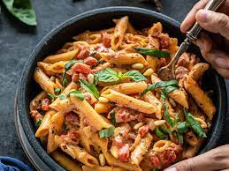

Cremige Tomat-Basiilikupasta

Koostisosad:
- 8 untsi pastat
- 2 supilusikatäit oliiviõli
- 1 väike sibul, tükeldatud
- 2 küüslauguküünt, hakitud
- 1 purk (14 untsi) purustatud tomateid
- 1/2 tassi rasva koort
- 1/4 tassi värsket basiilikut, hakitud
- Soola ja pipart maitse järgi
- Riivitud Parmesani juust serveerimiseks
Juhised:
- Keeda pasta vastavalt pakendijuhistele. Nõruta ja pane kõrvale.
- Suurel pannil kuumuta oliiviõli keskmisel kuumusel. Lisa hakitud sibul ja küüslauk. Prae, kuni sibul muutub klaasjaks.
- Lisa purustatud tomatid ja keeda umbes 5 minutit.
- Vähenda kuumust madalale ja lisa rasv koort. Sega läbi.
- Lisa hakitud basiilik ja maitsesta soola ja pipraga.
- Kuumuta kaste mõni minut, kuni see pakseneb.
- Vala kreemjas tomati-basiilikukaste keedetud pasta peale ja puista peale riivitud Parmesani juustu.